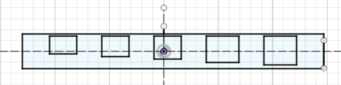
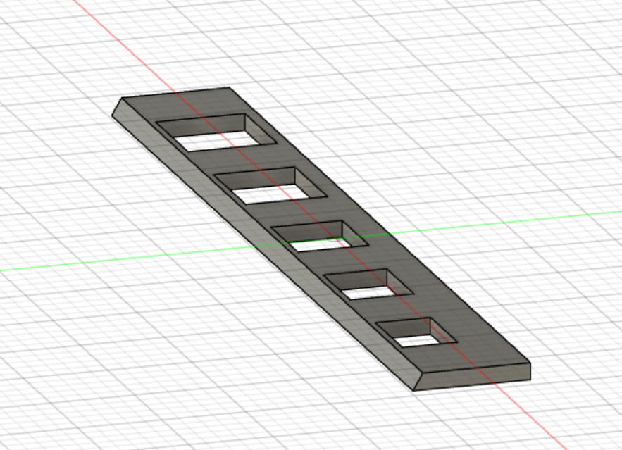
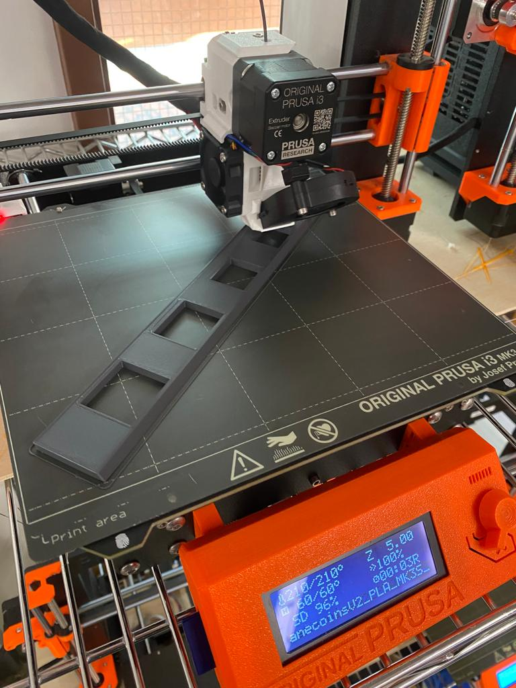
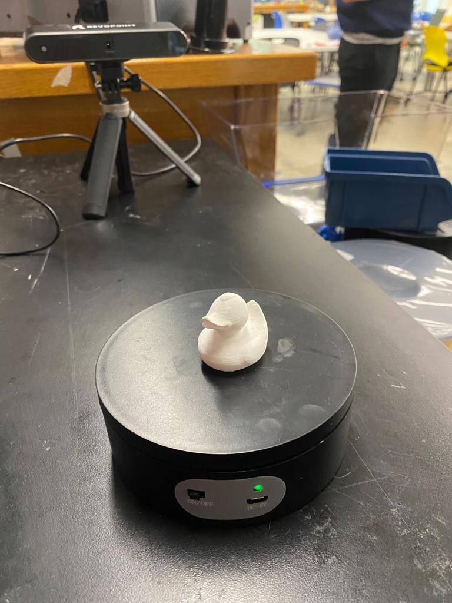
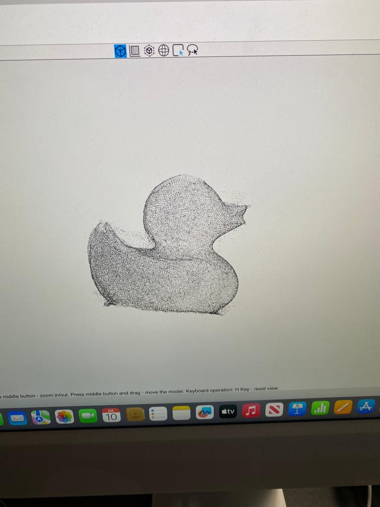
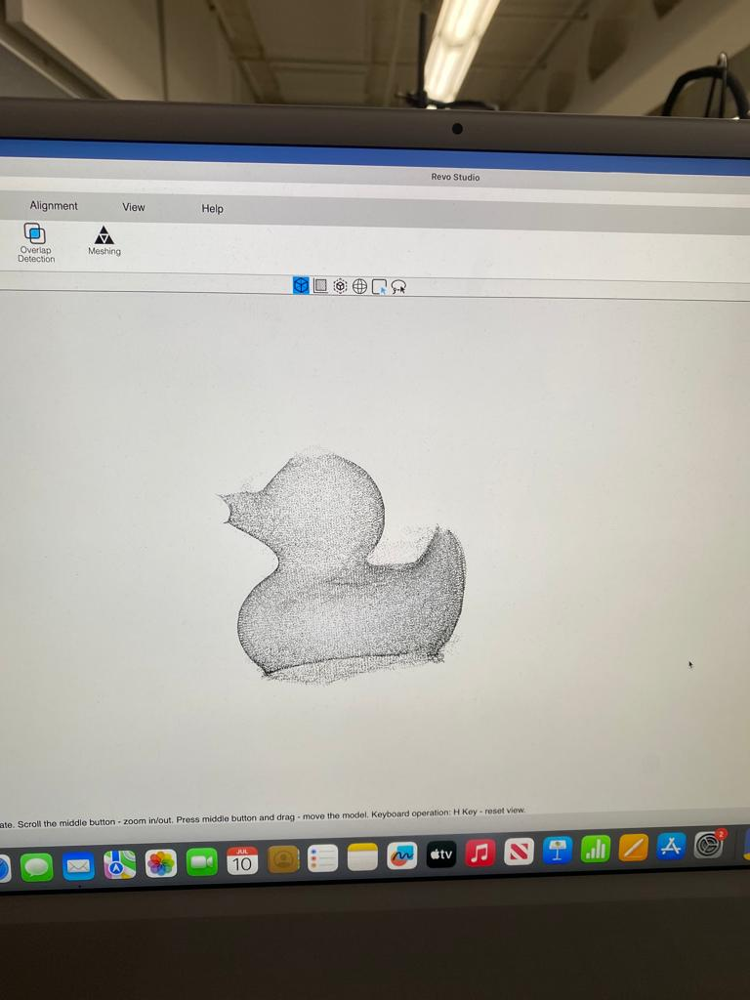

<br>
#### Week 5: 3D Design & Printing
<i> Assignment:
Design and print either (a) a component you need for your final project or (b) a small object that could not be (easily) made by subtractive methods. Upload your 3D model file (e.g. .f3z), STL file, and sliced gcode file to your documentation.
Scan something using a photogrammetry application.
Update your website with more information about your final project, including a bill of materials, timeline, and project plan (including whether you'll need 3D printed parts). </i>
And here is a <a href="https://nathanmelenbrink.github.io/intro-dig-fab/05_3d/index.html">Link to the original assignment page</a>
<p> I decided to use this week's assignment to move forward with my final project. I decided to print out my ramp to sort the coins. I had already done a sketch on Fusion 360 the week before. I just added a second sketch to have a sloping side to the ramp to ensure that the coins would fall into their holes (I think the photos will be more telling than my explanation).</p>



<p>For the second part of the assignment, I just scanned the little white duck with RevoPoint Scanner which wasn't that easy. I had to start over several times.</p>


